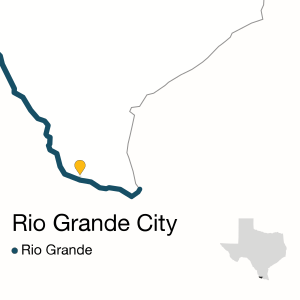

RIO GRANDE CITY — As water kiosks go, José Garcia prefers the Watermill Express on the northern edge of town.
He makes multiple trips each week to the brightly colored filling station with several five-gallon tanks in tow.
When Garcia lived across the border in Mexico, he drank the tap water, he says. But in 14 years, he’s learned that’s not what people do in Rio Grande City. “It’s not that I’m afraid of it,” says Garcia, 66. “You get accustomed to it.”
Reasons vary, but in conversations with residents and the town’s mayor, it’s clear the majority of people living in this border city in the upper Rio Grande Valley prefer trips to filling stations over the water that comes out of their taps. Janie Lopez says she doesn’t like the taste. Norma Barrera thinks water from the nearby Rio Grande is not “hygienic.”
In theory, clean, safe water should be flowing to all 14,000 residents. The city opened a new water treatment plant in 2010. But a long-standing arrangement leaves parts of town reliant on a handful of small, locally owned corporations. Most of them buy treated water from Rio Grande City and distribute it to customers using their own pipelines and storage tanks. One pulls water directly from the river itself, treats it and pipes it out to residents.
While the water those providers buy from the new city plant is usually fine, smaller suppliers struggle to keep it that way by the time it reaches their customers, according to state records for the past decade. Maintenance issues have plagued their facilities, and their water quality has violated public health standards.
That has divided the town into sections that have safe, reliable water — and others that can’t be so sure.
For instance, water distributed in May 2013 by the Rio Water Supply Corporation was found to contain high amounts of coliform, indicating the possible presence of sewage or animal waste. Such contaminants may cause diarrhea, abdominal cramps, nausea and jaundice.
That same year, regulators with the Texas Commission on Environmental Quality found that Rio Water’s facilities, which serve 3,900 people, were not kept clean enough to avoid “harboring” rodents and insects. In the past seven years, the agency has required Rio Water to notify its customers seven times that their water was not safe to consume without boiling.
{{ macro.photo(RIOGRANDE.PHOTO_4, RIOGRANDE.CAPTION_4, RIOGRANDE.PHOTO_CREDIT) }}Since 2011, the El Sauz Water Supply Corporation, which serves 1,110 residents, has been cited several times for high levels of potentially hazardous byproducts in its water and for failing to notify customers about them.
Long-term exposure to the byproducts — created when disinfectants like chlorine mix with naturally occurring materials in the water — can lead to liver, kidney or central nervous system problems and an increased risk of cancer.
The situation is similar at the two other water supply corporations that serve another 7,000 residents in the area. They have been slapped with numerous fines and notices of violation.
Local leaders have floated the idea of consolidating all the water providers under Rio Grande City to create one efficient, accountable public water system. But the other suppliers have resisted, according to Mayor Ruben O. Villarreal.
“People don’t want to give up their sense of power over a product,” Villarreal says. “They don’t want to let go of the reins over their responsibility of water. … There’s a political angle.”
{% include 'app/templates/includes/box_ad.html' %}Only one of the four water providers responded to multiple calls seeking comment.
“We’ve never had major problems with water,” says Martha Gaytan, general manager of the Union Water Supply Corporation, which serves about 6,000 people in Rio Grande City and its outskirts.
Gaytan acknowledges that decades-old pipes often break during weather changes, resulting in water shutoffs. The latest shutoff for Union’s ratepayers came in January, when thousands were without running water for more than a day.
Water Supply “Fiefdoms”?
Water supply corporations have been around since the 1930s, when Texas’ severe drought and dust bowl prompted rural communities to cast about for more water sources. As border colonias began to develop, many also saw water supply corporations as the best option.
Typically, one person — maybe a colonia resident or rural landowner, but often someone with business savvy and connections — brings people who want water service together into a nonprofit cooperative.
“It’s about controlling the flow of money. When you control the flow of money, you have a certain level of power.”
— Wendy Jepson, an associate professor at Texas A&M University
Residents become ratepayers and part owners of the corporation, electing a board to make the big decisions and hire a general manager.
Around Rio Grande City and many parts of the Valley, water supply corporations popped up for underserved colonias and communities just outside the town limits. As Rio Grande City grew and swallowed some of the corporation turf, it didn’t want to raise water rates to run new pipes, so it left them be.
The corporations were a good idea at the start, says Wendy Jepson, an associate professor at Texas A&M University and an expert on water governance. “They were able to use this tool to start providing water,” she says.
But now, she says, the patchwork of autonomous systems is “fragmented and uncoordinated, to say the least.”
Many areas that were once rural are now urban, and cities can provide water for everyone. But if the water supply corporations don’t want to give up their own power, no one can force them to.
“They’re little fiefdoms of control and resources,” Jepson says. The corporations may be nonprofit, but they give out lucrative contracts and control a basic resource.
“It’s about controlling the flow of money,” she adds. “When you control the flow of money, you have a certain level of power.”
But Gaytan, the Union Water Supply Corporation’s general manager, says it’s more about control than power. Rural areas and colonias are used to being ignored by traditional local governments, she says. Water corporation customers want to keep control of their own fate.
“The concern is that when you become part of a big group … sometimes the flow of money goes to the bigger operations because that’s where it’s needed most,” Gaytan says. “What ends up coming to the smaller areas is not what maybe we would have gotten if we would have been independent.”
Fighting One Another, and the River
Thanks to a new water treatment plant — finished in 2010 with $12 million in state and federal funds — Rio Grande City was finally prepared to absorb its remaining water supply corporations and easily serve their customers. The plant can treat four times as much water as the city actually uses.
But things quickly went from friendly to contentious.
“They thought that we as a city were trying to be the bullies and take something from them, and that wasn’t the case,” Villarreal says.
{{ macro.photo(RIOGRANDE.PHOTO_8, RIOGRANDE.CAPTION_8, RIOGRANDE.PHOTO_CREDIT) }}State Rep. Ryan Guillen, a Democrat from Rio Grande City, says turf wars over water are not uncommon. Experts have long encouraged small towns to band together and provide services like water by sharing treatment plants, which would cut costs. But right now, “everybody has their territory,” he says. “And that’s the way they like it.”
The water treated and distributed by Rio Grande City has not been squeaky clean, either, Gaytan points out. Records show that in November, Rio Grande City was cited for producing water that had too much coliform bacteria.
The root of most drinking water problems here is the city’s intake pipe, located in one of the foulest stretches of the Rio Grande.
The town is one of the few along the Mexican border that pulls its water straight from the river rather than through canals built for agriculture that create a kind of natural cleaning process.
Even as state and national efforts to clean up the river have intensified, the bacteria levels around Rio Grande City have worsened.
The likely culprits are agricultural and industrial pollution from upstream — increasing as the border population grows — and Mexican cities without treatment plants that dump raw sewage into the river.
Rio Grande City’s old treatment plant didn’t do a good job removing those contaminants, and it collected water from a stretch of the river that would get so low during drought that workers had to keep pumps going around the clock to feed river water into the intake pipe.
The new plant pulls in water from a different, much deeper stretch of the river, and its intake is also upstream of Rio San Juan, a creek that feeds from the Mexican side and brings in a large amount of raw sewage.
“It was a relief,” Ruben Klein, the city’s water utilities director, says of the new intake system. “Now I can rest at night.”
{{ macro.photo(RIOGRANDE.PHOTO_2, RIOGRANDE.CAPTION_2, RIOGRANDE.PHOTO_CREDIT) }}But that hasn’t helped residents served by other providers, including Union Water Supply Corporation customers who had no running water for more than a day in January.
Students at the neighborhood elementary school, La Union, were bused to a school serviced by a different water company so they could use the bathrooms. Eventually, they were sent home.
“We just turned on the faucet and there was no water,” says Brenda Peña, a 29-year-old mother of two who lives with her husband in the part of town serviced by Union. “We can’t ask the neighbors because they don’t have water either.” The company told her that even once water service returned, residents were to boil their water for a few days before drinking it, she says.
Gaytan says changes in weather were the likely culprit. “That causes the pipes to move, and as they move, they crack,” she says.
The corporation got millions of dollars from the Texas Water Development Board last year to start addressing the problems, but that’s not nearly enough.
A recent application for additional funding indicated what dire straits Union is in.
Unlike the other water supply corporations, Union runs its own treatment plant. But that plant is operating at 128 percent of capacity, and its distribution pipes are in bad shape, Union said in state filings.
Asking for $5.6 million to both improve its distribution system and double the size of its treatment plant, Union’s application indicated that almost half of the water the plant produces is lost to leaky pipes. Water main breaks happen an average of five times a week, causing outages and problems with treatment that lead to boil-water notices.
{{ macro.photo(RIOGRANDE.PHOTO_6, RIOGRANDE.CAPTION_6, RIOGRANDE.PHOTO_CREDIT) }}On top of that, contamination is a major concern, the application said. When pipes break, the water is exposed to outside chemicals. The old pipes, water meters and most household plumbing systems could also allow lead to enter the drinking water, “a potential health hazard for customers,” the company wrote.
The project has been delayed for years. More than five years ago, Union secured more than $5 million from the U.S. Department of Agriculture to cover some of the costs, but little has been done since. The average household water bill recently jumped from about $360 per year to $474 per year, and will have to be raised significantly to pay back the loans Union is applying for now, the application said.
And it’s not guaranteed that Union or anyone else applying for loans will get them. The Legislature hasn’t budgeted additional loan funds for the Texas Water Development Board.
In the past, state and federal money has helped hundreds of communities. But there are still some left behind, says Guillen, the state representative.
“I’ve talked to business folks that say, ‘Hey, we don’t have enough water pressure, and that doesn’t meet health codes. And so we might have to close,’” he says. “There’s still some work to be done … and the will to spend money on just about anything is deteriorating around here.”
That means, at the very least, a long wait for some living in Rio Grande City. Lorenzo Frausto, a 39-year-old father of three who is disabled, is a Union customer. Outages aren’t uncommon, he says, and all one can do is visit the water kiosks.
And wait.
“All we have to do is just wait till the morning and see if it comes back on,” he says. “It’s a waiting game.”
Disclosure: Texas A&M University is a corporate sponsor of The Texas Tribune. A complete list of Tribune donors and sponsors can be viewed here.
This project was crowdfunded via Beacon Reader. To review donors to the project, click here.
Contributors
This website was designed and developed by Becca Aaronson, Emily Albracht and Ben Hasson.